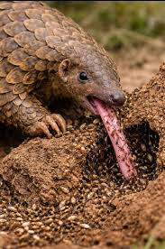

What Pangolins Eat

Pangolins are highly specialized insectivores — their entire anatomy is built around eating ants and termites. An adult pangolin may consume between 140 and 200 grams of insects per day, which works out to roughly 70 million individual insects over a full year. This makes them one of the most effective natural regulators of termite and ant populations in their ecosystems.
Despite this enormous appetite, pangolins tend to be selective feeders. Rather than consuming any available species, an individual pangolin will often focus on just one or two preferred ant or termite species, even when many others are present nearby.
The Tongue
The pangolin's tongue is its most remarkable feeding tool. Anchored not in the mouth but deep in the chest cavity — between the sternum and trachea — it can extend up to 40 cm beyond the tip of the snout. The tongue is coated in thick, sticky saliva that insects adhere to on contact. A pangolin probes its long snout and tongue into ant tunnels and termite galleries, sweeping up hundreds of insects per second.
Pangolins have no teeth at all. To compensate, they swallow small pebbles and grit while foraging, which accumulate in a keratinous-spined gizzard. This muscular chamber grinds insects the same way a bird's gizzard processes seeds.
Finding Food
Pangolins rely almost entirely on their sense of smell to locate prey — their eyesight is poor and not well suited for hunting. Once an insect colony is detected, a pangolin uses its powerful front claws to tear open hardened termite mounds or rotten logs. The same claws that break open mounds are closed tightly over the nostrils while feeding, protecting them from swarming insects.
Behavior
Solitary & Nocturnal
Most pangolin species are solitary animals that only come together briefly to mate. They are almost entirely nocturnal, spending daylight hours resting in burrows or curled up in tree hollows. The only regular exception is the black-bellied (long-tailed) pangolin of central Africa, which is active during the day.
Home ranges vary by species and habitat, but individuals generally avoid one another outside of the mating season. Males typically occupy larger territories than females and mark boundaries using urine, feces, and secretions from anal scent glands.
Movement
Ground-dwelling pangolins walk on all four limbs, but their heavy front claws are curled under the foot pad rather than placed flat on the ground. Some species can briefly walk bipedally, balancing on their hind legs and tail when their forelegs are occupied digging.
Arboreal species like the white-bellied and black-bellied pangolins use a prehensile tail to hang from branches and pry bark off trees to expose insect nests. All pangolin species are capable swimmers and will cross rivers without hesitation.
Defense Mechanisms
When threatened, a pangolin's first response is to roll into a tight ball, tucking its vulnerable face under its tail. The overlapping scales on the outside form a near-impenetrable shell. The free tips of the scales are also sharp enough to cut a predator that tries to pry the ball open.
If rolling up doesn't deter a threat, pangolins can release a foul-smelling chemical from glands near the base of the tail, similar in function to a skunk's spray. This combination of armor and chemical deterrent makes adult pangolins largely safe from most natural predators — their biggest threat comes from humans.
Reproduction & Raising Young
Pangolins typically breed once a year. Males locate females by following scent markings rather than actively searching, and if two males compete for the same female, they use their tails as clubs in a shoving match. Gestation lasts between 70 and 140 days depending on species.
African species usually give birth to a single offspring (called a pangopup), while Asian species may have one to three. Pups are born with soft, pale scales that harden within days. They ride on their mother's tail for the first few months, tucking underneath her if danger arises. Young pangolins are weaned at around three months and fully independent by two years of age.
Sources: Wikipedia — Pangolin | WWF — Pangolin | Save Pangolins